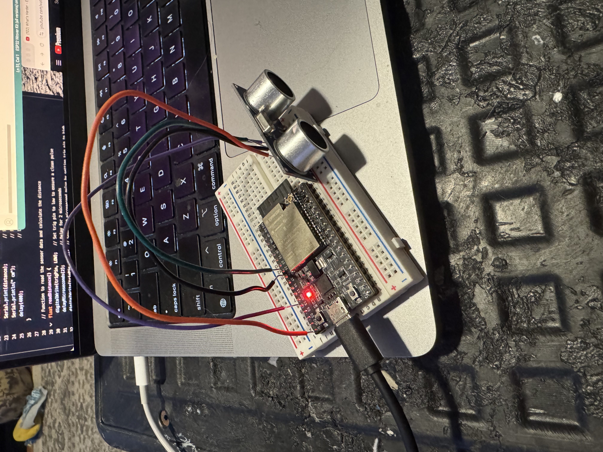
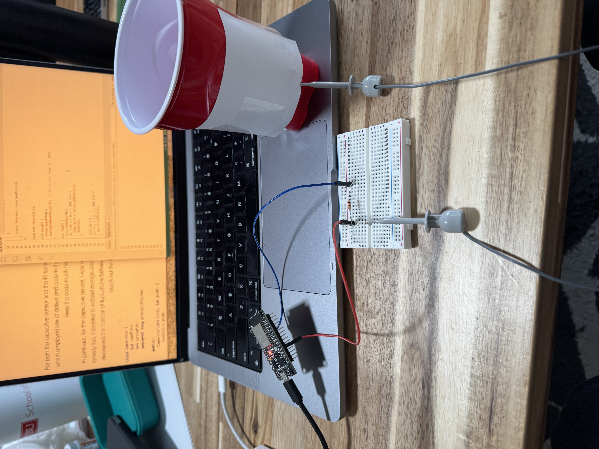

For this week's assignment, I created two sensors: a capacitive sensor to detect the amount of water added to a Dixie cup and an ultrasonic distance sensor to measure the distance of an object (such as my hand) from the sensor.
To build the ultrasonic distance sensor, I used an ESP32 microcontroller, an HC-SR04 ultrasonic sensor, a breadboard, and jumper wires. The setup involved connecting the trigger (TRIG) and echo (ECHO) pins of the ultrasonic sensor to the ESP32's GPIO pins via the breadboard, with the TRIG pin set as an output to send ultrasonic pulses and the ECHO pin configured as an input to receive the reflected signal. Specifically, I connected the TRIG pin to GPIO 25 and the ECHO pin to GPIO 33 on the ESP32 while powering the sensor with 5V and connecting its ground to the ESP32's ground.
The coding process proved to be the most challenging part of this build. Initially, the readings from the serial monitor kept bottoming out, giving me inaccurate or zero-distance readings. To address this, I went through several tutorials and applied debugging steps, which helped me understand the underlying issues with the code.
One of the biggest improvements I made was ditching the use of delays and instead implementing a non-blocking approach using millis(). This change allowed the sensor to take more consistent readings without being interrupted by unnecessary pauses in the code.
Download Ultrasonic Sensor CodeThe results from the ultrasonic sensor were mostly accurate once I got the code working properly. As shown in the video, the distance readings decreased as I moved my hand closer to the sensor: the initial distance was approximately 6.4 cm, and the final distance was around 3.88 cm. The readings consistently decreased as I moved my hand toward the sensor, confirming that the ultrasonic distance sensor was functioning as expected. The live plot visualization also made it easier to track changes in real time and verify accuracy.
In addition to the ultrasonic sensor I built for this week's assignment, I also experimented with constructing a capacitive sensor—an idea heavily inspired by our work in class.
Building the sensor was a relatively straightforward process. I connected a piece of copper tape to a circuit involving a resistor, along with two pins on the ESP32:
One pin (GPIO4) for writing signals to the sensor, which charges and discharges the capacitor.
Another pin (GPIO32) for reading the resulting voltage via the analogRead() function.
The copper tape was then attached to the outside of a glass or plastic cup. From there, it was a matter of writing code for the ESP32 to measure how the capacitance changed based on the amount of water in the cup.
The code for the ESP32 was heavily inspired by the techniques we worked on in class. Using the analogRead() function, I was able to capture changes in capacitance as variations in voltage.
The code uses a simple process:
Charging the Capacitor: A pin is set to HIGH, allowing the capacitor to build up a charge.
Reading the Voltage: The voltage is read via the analogRead() function.
Discharging the Capacitor: The pin is set to LOW, allowing the capacitor to discharge before the next reading.
I ran this cycle repeatedly to gather a dataset of readings and then averaged them to smooth out any noise.
Download Capacitive Sensor CodeI'll admit the results weren't particularly reliable, and I haven't found a way to convert them into any standard unit of measurement for capacity. However, I did notice a clear correlation between the amount of water in the cup and the readings from the capacitive sensor, which was definitely cool!
When I added water to the cup, the readings consistently increased, and when I removed water, the readings decreased. This suggests that the sensor is effectively detecting changes in capacitance related to the presence of water.
Although the results are far from perfect, and there's plenty of room for improvement, this project was a great learning experience. It was fascinating to see how a simple setup involving copper tape and some code could be used to detect changes in water levels. While the sensor is not yet calibrated for precise measurement, it shows potential for future improvement and refinement.
I'm excited to see how I can enhance this sensor further and potentially find a way to make it more reliable and precise. For now, though, it's pretty satisfying just to see a measurable change that correlates with the amount of water present.
← Back to Home